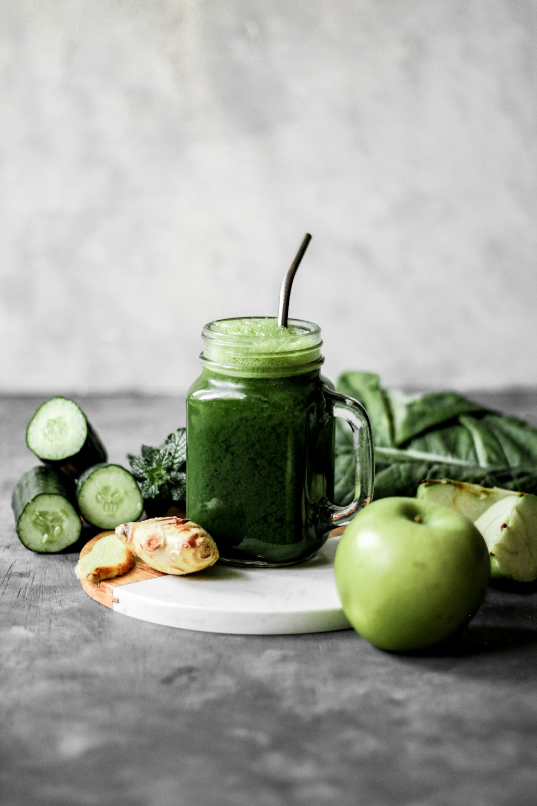
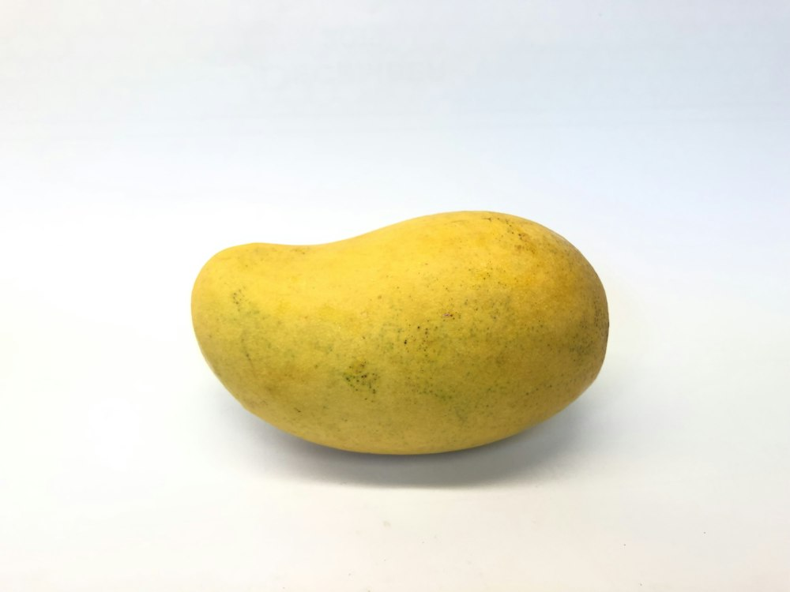
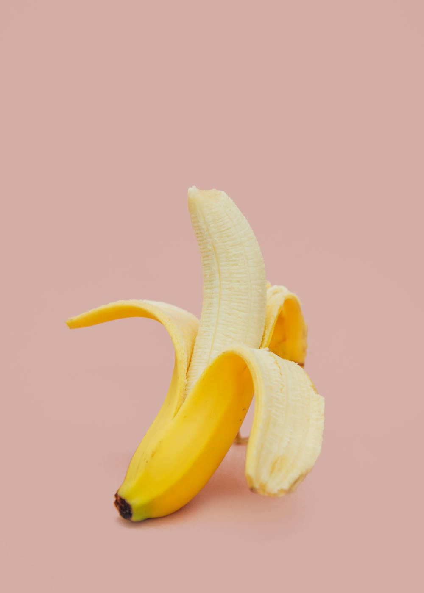

POKOK JAMBU
Pokok jambu batu premium yang menghasilkan buah ranum, manis, dan kaya dengan vitamin C. Sesuai untuk ladang komersial mahupun tanaman laman rumah.
Peneraju dalam bekalan dan pengurusan pokok buah-buahan berkualiti tinggi untuk hasil pertanian yang optimum dan mampan.

Pokok jambu batu premium yang menghasilkan buah ranum, manis, dan kaya dengan vitamin C. Sesuai untuk ladang komersial mahupun tanaman laman rumah.
Varieti mangga berkualiti tinggi dengan isi tebal dan manis berkrim. Pokok matang tahan penyakit dan memberikan hasil tuaian yang melimpah.

Pokok kelapa pandan dan komersial yang berbuah lebat dengan air manis menyegarkan. Pilihan terbaik bagi pelaburan jangka panjang sektor pertanian.
Benih pokok pisang pilihan yang tumbuh pantas dan menghasilkan tandan besar. Ideal untuk pasaran tempatan dan pemprosesan makanan.
